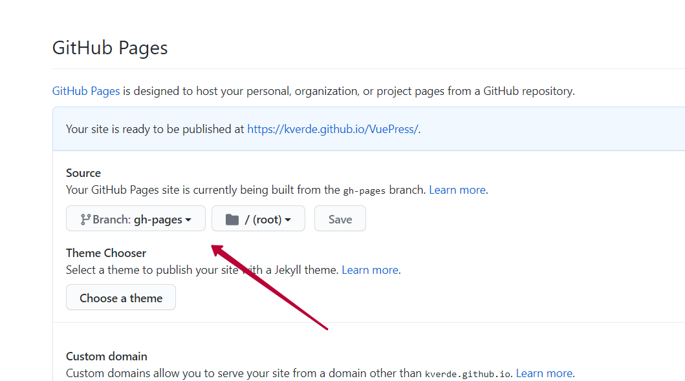

Размещаем VuePress HelloWold на GitHub Pages
VuePressopen in new window — генератор статических сайтов. Упрощённо, вы пишите несколько файлов в Markdown, запускаете генератор и эти несколько файлов преобразуются в страницы сайта. Причем сайт не требует хостинга с возможностью выполнения скриптов, достаточно отображения статических файлов.
Рассмотрим HelloWold от установки всех приложений до деплоя сайта на GitHub Pagesopen in new window. Полный текст примера находится в репозиторииopen in new window.
Устанавливаем приложения
VuePress основан на JavaScript фрейморвке Vueopen in new window поэтому для его работы нужен Node.jsopen in new window, установите его. Для удобной работы с зависимостями установите yarnopen in new window.
Создаём проект
Создайте каталог HelloWold, зайдите в него и создайте файл 01_CreateProject.bat с текстом
call yarn init
call yarn add -D vuepress
pause
2
3
4
Bat файл нужен вместо запуска команд вручную, так как, создавая его, решение задачи становится воспроизводимымopen in new window. Это значительно повышает эффективность работы в долгосрочной перспективе.
После запуска 01_CreateProject.bat yarn создаст проект (можете не вводить никаких данных и нажимать Enter) и установит VuePress. В каталоге HelloWold появится новый файл, откройте его и добавьте в него следующий скрипт:
"scripts": {
"docs:dev": "vuepress dev docs",
"docs:build": "vuepress build docs"
}
2
3
4
Должно получится примерно так:
{
"name": "HelloWorld",
"version": "1.0.0",
"main": "index.js",
"license": "MIT",
"devDependencies": {
"vuepress": "^1.7.1"
},
"scripts": {
"docs:dev": "vuepress dev docs",
"docs:build": "vuepress build docs"
}
}
2
3
4
5
6
7
8
9
10
11
12
13
Не пропустите запятую перед полем "scripts".
Создаём главную страницу
В каталоге HelloWold создайте каталог docs, а в нём файл Readme.md с содержанием:
# My site
HelloWold
2
3
Запускаем сайт
Создайте файл 02_RunProject.bat с текстом:
call yarn docs:dev
pause
2
3
Запустите его. Сейчас сайт запущен локально, откройте его по адресу localhost:8080open in new window.
Выкладываем проект на GitHub Pages
Настройте доступ к GitHub по SSHopen in new window и создайте новый репозиторий.
Перед загрузкой на GitHub в проект необходимо добавить настройку базового пути. Для этого создайте файл docs/.vuepress/config.js.
module.exports = {
base: "/REPO/"
}
2
3
Замените REPO на имя вашего репозитория, слешы перед и после названия обязательны. Затем создайте файл 02_RunProject.bat с текстом:
call yarn docs:build
pause
2
3
Запустите его. Этот скрипт собирает проект, собранный проект готов к фиксации на GitHub.
Для деплоя создайте ещё один файл 04_DeployProject.bat с текстом
cd docs/.vuepress/dist
git init
git add -A
git commit -m 'deploy'
git push -f git@github.com:USENAME/REPO.git master:gh-pages
pause
2
3
4
5
6
7
8
Только замените USENAME на имя аккаунта GitHub, а REPO на имя репозитория. Запустите файл. После успешной фиксации проект окажется в репозитории.
Теперь зайдите в настройки репоизтория и выберите ветку gh-pages в настройках GitHub Pages.

Переходите по ссылке https://USERNAME.github.io/REPO/ и проверяйте работу сайта.